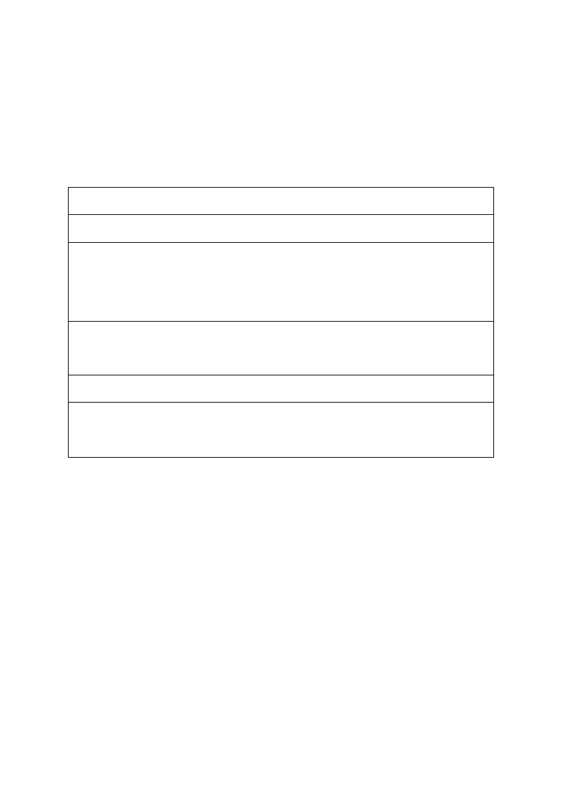
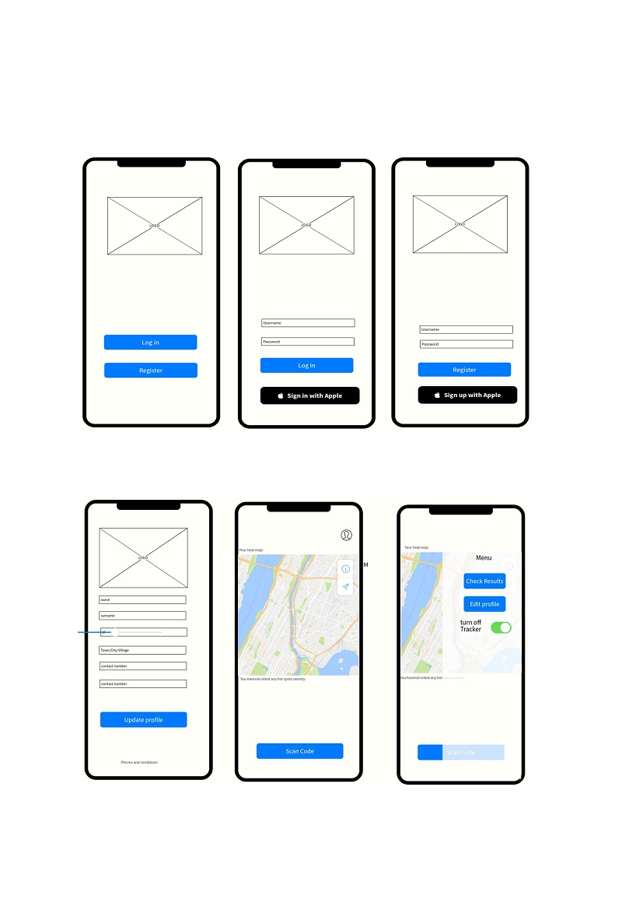
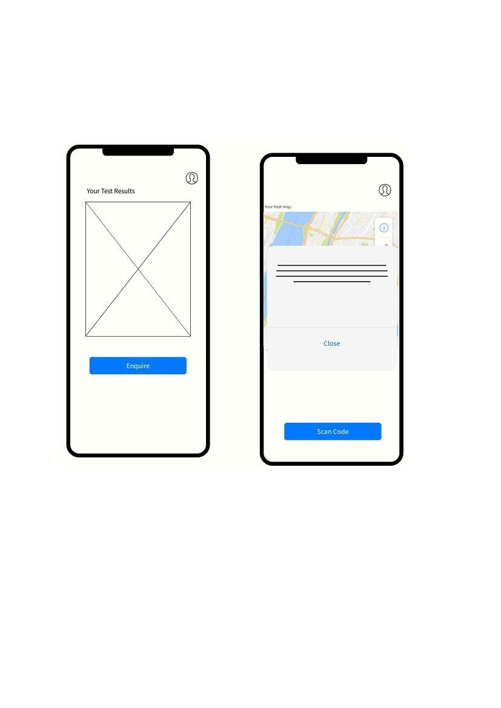
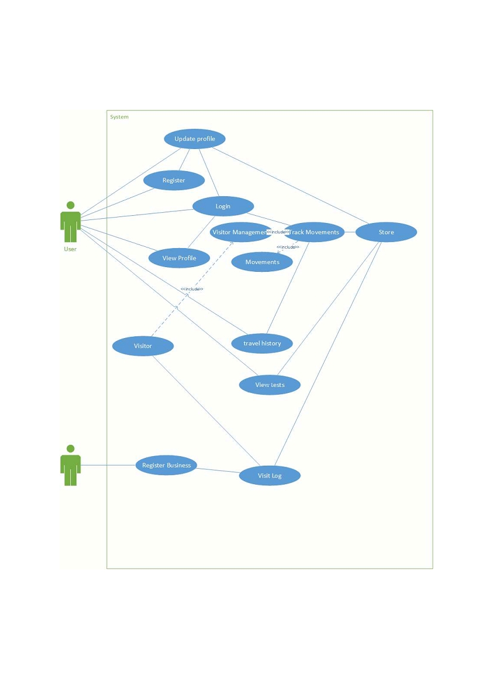
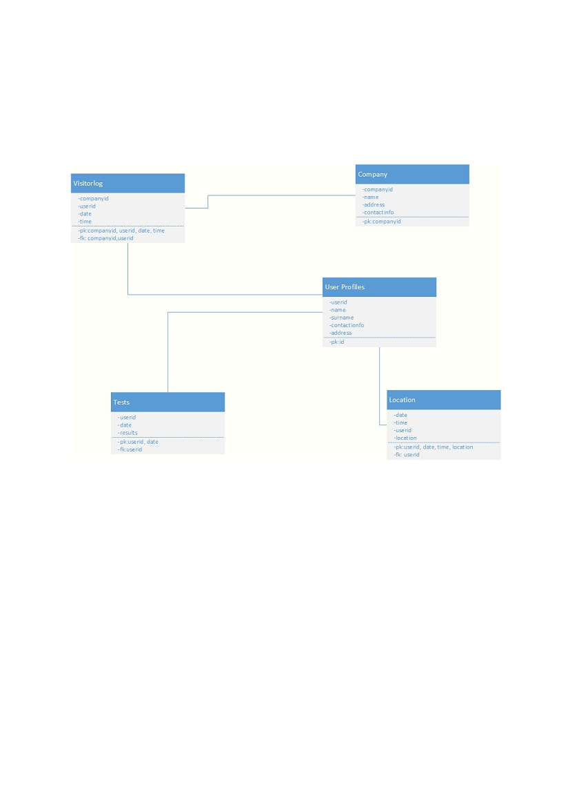
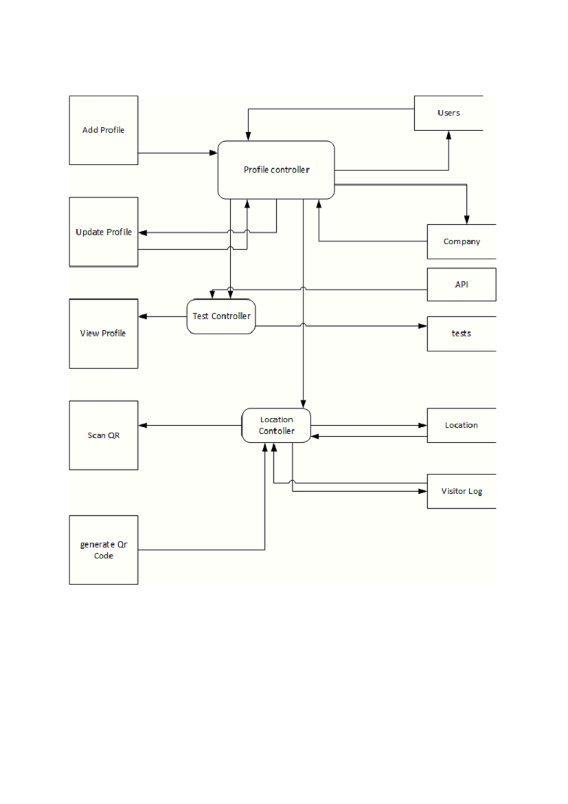

UNIVERSITY OF BOTSWANA
CSI464: Term Paper
Oaitse Lloyd Tseleng
201500132

Table of Contents
Introduction................................................................................................................................3
Literature Review.......................................................................................................................3
Definitions and terms.............................................................................................................3
Contact Tracing..................................................................................................................3
Covid-19.............................................................................................................................3
Mobile Application ............................................................................................................3
Exiting contact tracing applications.......................................................................................4
Germany’s Corona Warn App ...........................................................................................4
Google and Apple Exposure Notifications ........................................................................4
Technological Assessment.........................................................................................................4
Social Impact..........................................................................................................................4
Economic Impact ...................................................................................................................4
Legal Impact...........................................................................................................................4
Ethical Impact ........................................................................................................................5
Challenge Definition..................................................................................................................5
Wireframes and Mock-ups.........................................................................................................6
Design and System Architecture................................................................................................8
Use Case.................................................................................................................................8
UML Model ...........................................................................................................................9
Data Flow Diagram..............................................................................................................10
Implementation Directions.......................................................................................................11
Database...............................................................................................................................11
Localization..........................................................................................................................11
Conclusion................................................................................................................................11
References................................................................................................................................12

Introduction
The world is an ever-changing environment, a state of flux, a never-ending cycle that has been
repeated for decades before us and shall continue after us. Using today to learn from yesterday
to prepare for tomorrow has been one of our greatest survival techniques as humanity, but we
can never be too prepared, every once so often the universe reminds us that we are a very small
part of a much larger grand scheme. 1346 the black death, 1918 Spanish flu, 2009 Swine flu
are just a few examples of pandemics that have gripped the world with fear and threatened to
cause disaster. Fast forward to 2019/2020 and humanity again finds itself in the clutches of
another pandemic, the major difference being the advancement in technology. How can we
leverage the rich technological resources available to us today, to apply them to problems we
faced yesterday for them to be of use tomorrow? (McMullan, Blight, Gutierrez, & Levett, 2020)
According to data from Data Reportal there is a staggering 5.15 Billion mobile phone users
around the world (Data Reportal, 2020), given that the world population is about 7.594 Billion,
that is near every 7 in 10 people have a mobile phone. Therefore, with such an extensive use,
how can we pull in the mobile world, together with its users, in order to help fight against the
wildly spread covid-19 and other similar future pandemics that may arise.
Literature Review
Definitions and terms
Contact Tracing
Contact tracing refers to the process of identifying certain people who have a common entity
to find who they came in contact with, in order to find others who may have the same entity.
In terms of the recent covid-19 pandemic we are looking to find all those who have potentially
come into contact with the virus to try to get them help and isolate them and stop the spread of
the virus. (CDC, 2020)
Covid-19
Coronavirus (COVID-19) is an illness caused by a virus that can spread from person to person.
The virus that causes COVID-19 is a new coronavirus that has spread throughout the
world.COVID-19 symptoms can range from mild (or no symptoms) to severe illness. COVID-
19 virus is a new virus linked to the same family of viruses as Severe Acute Respiratory
Syndrome (SARS) and some types of common cold. (UNICEF, 2020)
Mobile Application
Usually referred to as apps, these are applications that are more suited to being run on mobile
devices, this ranges from wearable, to handheld devices such as smartphones. Users interact
with these apps in order to gain a service that the owner of the app has.

Exiting contact tracing applications
Germany’s Corona Warn App
Germany has launched their corona warn me app that is considered to be doing very well. His
app require Bluetooth to be on all times, therefore draining a lot of battery. It then uses
Bluetooth to identify the distance between two devices, anything less than 1.5 metres for more
than 15 min will trigger an automatic exchange of keys. When it came to data protection, they
chose to decentralise the data that they keep, only requiring that users enter their info. (The
Local, 2020)
Google and Apple Exposure Notifications
Built by fierce competitors in order to show support into finding a common ground for ending
covid-19. Also uses Bluetooth technologies check if you have been in contact with a covid-19
carrier. The devices exchange privacy-preserving random IDs and it then scans through a list
of positive covid-19 cases against the devices list of ids that it collected that day. If a positive
match is found, then the app will notify you with further instructions from your public health
authority on how to keep you and the people around you safe. Key aspects they stress about
their app is that it does not track location, you control whether you want to use and share
information, and that only health officials see the data, neither google nor apple have access to
data stored. (google, 2020)
Technological Assessment
Social Impact
People are usually fearing the thought of being watched tor tracked, no one wants to be
constantly monitored. Human’s genuinely love being given freedom. This app may be received
negatively by the public as they may perceive it in a bad way. Trust is also going to be a major
issue, whether the trust you with the data and that you will do only what it was supposed to be
used for.
Economic Impact
Economically, building such an app requires huge resources, being that generally most contact
Governments will not see return in investment, as they are the main procurers of the data that
is being collected. However it may help small developer companies as they can make money
off tenders to produce tracing apps or make one and sell it to the government.
Legal Impact
Data protection acts and Privacy laws will have an impact on how much data I can share, and
how secure the data will be. This various from country to country and will be dependent in
which h countries adopt the application, dealing with more than one country could prove a
greater task in term of abiding to both law practices in different environments.

Ethical Impact
The application will be used to do its job, and will not be used for any other reason, even post
covid-19 the data collected will not be used to pursue other endeavours other than what has
been specified. Ethics are a huge part of technology that although there is no law against
performing an action or using the data in a certain way, is it correct ethically and morally.
Challenge Definition
Challenge
Category
Background
major impact on the economy and society as a whole. Pandemics spread quickly
and vastly and tracking them could be problematic such as covid-19, it is
therefore imperative to find ways in which to ease the burden health officials
have in tracking people who may been in contact with diseases.
Description
with covid-19, it will also provide a way in order to check your test results and
act as a visitor management app.
Project Team
Stakeholder
Table 1: Challenge Definition

Wireframes and Mock-ups
Registering and making the profile will be key in getting user information that can prove useful
to the contract tracing campaign.
Figure 1: Landing Login and Registering Pages
Figure 1 shows the landing page that is just a screen that will be present when you first get the
app, from there, you can register as a new user or login with an already created account.
Figure 2: Profile, Main and Option pages

Users can update their profiles as they wish, name, surname and ID number cannot be changed
and must be correctly entered the first time, contact information can change though. The main
page provides a heat map of your local places or where you spend most time, this is to show
you if you are near hot zones often or not. You can then toggle a menu item that brings a menu
showing different options and pages that you can go to.
Figure 3: Results and Notifications
After being tested you can wait for your results to show, it will be able to show more than one
set of results. It will also be able to notify you, for example of a hotpot, or if you have been in
contact with covid-19.

Design and System Architecture
Use Case
Figure 4: Use Case
Figure 4 shows the use case of the system, it will basically have users interacting with it to get
their own way, whether checking test, viewing their recent journeys, or scanning a QR code to
enter an office building. Companies also have to register on the system to allow users to scan
the uniquely configured GR code that identifies that a individual has entered their building. All

the data shall be stored on a cloud server that will be communicating by some form of
integration with the health service database. This will be to compare unique codes against
known covid -19 carriers,
UML Model
Figure 5: Database Model
This shows a quick and basic way the storage of data will be aligned. The User And company
will both have unique IDs that will tie them to other Entities. For example, the company-id and
user id are needed to register a user in the visiting log, this shows that the user visited that
company. User id is also needed as a foreign key to uniquely identify their location from others
in the database, as well as in the tests in order not to pick out the wrong test. The four databases
are what has been identified so far, it may be extended as more features are necessary.

Data Flow Diagram
This shows the data flow of the program, how we expect the flow of data to move, it also shows
the MVC type of architecture, in this architecture there is a model that’s stores data, view which
displays data to the user and controllers that act as a middle man supplying data to the view
and vice versa. The reason for choosing this model amongst others is it is very easy to
understand at a high level and is quick to implement, It also allows application to be edited
easily as if you need to only change one part, there is no need in going through the whole
program.

Implementation Directions
Database
A cloud storage will be used to store the data collected, this reduces the information on the
device and also makes it readily available to be accessed at all times. The only data that will
not be stored is the record of patients with covid-19, that will be stored in the health services
side. The assumption made here is that the y will have a API that will allow us to pull data for
comparison or to push data when needed.
Localization
In terms of localization, it will use global positioning system and Bluetooth in order to track
users. GPS will be used to know the area that a user has been in while bluetooth acts a distance
guide on how close to s a person you are, alerting you if need be to give each other room.
How this will be achieved is by allowing user to accept settings when they set up profile, that
they agree to being tracked and their location being surveyed, and also to turn on their bluetooth
and GPS on and off without permission, or to send data without them needing to acknowledge
first.
The GPS will track a person location, where they have visited, and give an accurate map of
people around the area at that time, due to the devices it picks up. Bluetooth is more the close
medium, providing keys when two devices are too close to each other for an extended period
of time. GPS will not do any key swapping instead it just marks the time that two people where
in a given area, less than 1000m apart, since it is less accurate, but can provide a broader look
at which areas may be potential hot zones. This could work in situations such as I the strikes,
matching key pairs could be more difficult than just looking at all the devise in one area at a
given time.
Conclusion
Technology has the capability to play a very big part if used correctly, I believe that using GPS
to together with bluetooth could be the best way to leverage technology in order to aid contact
tracing.

References
CDC. (2020, 04 29). Case Investigation and Contact Tracing : Part of a Multipronged
Approach to Fight the COVID-19 Pandemic . Retrieved 07 20, 2020, from Center for
disease
control
and
prevention:
https://www.cdc.gov/coronavirus/2019-
ncov/php/principles-contact-tracing.html
Data Reportal. (2020, 07 15). DIGITAL AROUND THE WORLD . Retrieved from Data
Reportal:
https://datareportal.com/global-digital-
overview#:~:text=The%20number%20of%20mobile%20phone,in%20the%20past%2
012%20months.
google. (2020). Exposure Notifications: Using technology to help public health authorities
fight
COVID-19 .
Retrieved
07
20,
2020,
from
Google:
https://www.google.com/covid19/exposurenotifications/
McMullan, L., Blight, G., Gutierrez, P., & Levett, C. (2020, 04 29). How humans have reacted
to pandemics through history . Retrieved 07 15, 2020, from The Gaurdian:
https://www.google.com/search?q=ideoligy+eaning&rlz=1C1CHBD_enBW901BW9
01&oq=ideoligy+eaning&aqs=chrome..69i57.3751j0j9&sourceid=chrome&ie=UTF-
8
The Local. (2020, 06 16). 11 things to know about Germany's newly launched coronavirus
tracing phone app . Retrieved 07 20, 2020, from The Local De:
https://www.thelocal.de/20200616/11-things-to-know-about-germanys-newly-
launched-coronavirus-tracing-phone-app-tracking
UNICEF. (2020, 03). Key Messages and Actions for COVID-19 Prevention and Control in
Schools. Retrieved 07 20, 2020, from World Health organisation:
https://www.who.int/docs/default-source/coronaviruse/key-messages-and-actions-for-
covid-19-prevention-and-control-in-schools-march-
2020.pdf?sfvrsn=baf81d52_4#:~:text='CO'%20stands%20for,types%20of%20commo
n%20cold.